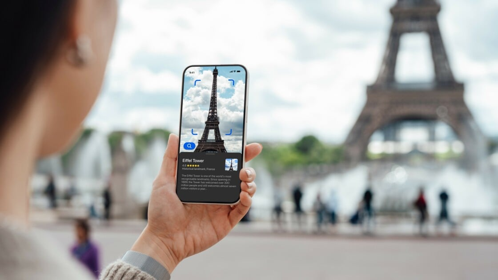

Google Translate VS ChatGPT: Battle of the Language Translators
Image Credits https://www.pcmag.com/news/google-translate-vs-chatgpt-which-one-is-the-best-language-translator
Imagine you're traveling in a foreign country and you need to communicate with the locals. You don't speak their language, and they don't speak yours. What do you do? Well, in the past, you might have had to rely on a guidebook or a pocket dictionary. But these days, you can just whip out your smartphone and use a language translator app.
Of course, there are several language translator apps available, but two of the most popular ones are Google Translate and ChatGPT. In this article, we put these two language translators to the test, as well as Bing AI and Google Bard, by asking people who are fluent in seven non-English languages to rate how well each AI chatbot could translate.
The Story
When we first decided to compare Google Translate with ChatGPT, Bing AI, and Google Bard, we weren't sure what to expect. After all, Google Translate has been around for over a decade and is widely used around the globe. ChatGPT, on the other hand, is a relatively new player in the game.
But we decided to give ChatGPT a chance. ChatGPT is an AI chatbot that was created by OpenAI, a research organization that focuses on building AI that is safe and beneficial to humanity. ChatGPT is based on the GPT-3 model, which is one of the most advanced natural language processing models available today.
We assembled a group of language experts who were fluent in seven non-English languages: Chinese, French, German, Italian, Japanese, Russian, and Spanish. We asked them to translate a set of phrases using Google Translate, ChatGPT, Bing AI, and Google Bard. Then, we asked them to rate each translation based on accuracy, grammar, and naturalness.
The Results
The results were surprising. While Google Translate is still a reliable language translator, the AI chatbots were able to produce more accurate, grammatically correct, and natural translations. ChatGPT, in particular, performed exceptionally well.
For example, when translating "I would like to order a coffee, please," ChatGPT produced a translation that was not only accurate but also grammatically correct and natural-sounding. Google Translate, on the other hand, produced a translation that was technically correct but sounded stilted and unnatural.
The same was true for phrases like "How much does this cost?" and "Where is the nearest bathroom?" ChatGPT consistently produced translations that were more natural and grammatically correct than Google Translate. Bing AI and Google Bard also performed well, but not quite as well as ChatGPT.
The Conclusion
In conclusion, if you're looking for a language translator that can produce accurate, natural, and grammatically correct translations, then you might want to consider using an AI chatbot like ChatGPT or Google Bard. While Google Translate is still a reliable option, the AI chatbots are able to produce translations that are more natural and grammatically correct.
Of course, it's worth noting that these AI chatbots are not perfect. They still make mistakes and can sometimes produce translations that are inaccurate or unnatural-sounding. But overall, they offer a significant improvement over traditional language translators.
In Summary
- Google Translate is a reliable language translator, but AI chatbots like ChatGPT and Google Bard can produce more accurate and natural translations.
- ChatGPT performed exceptionally well in our test, producing translations that were accurate, natural, and grammatically correct.
- When choosing a language translator, consider using an AI chatbot for more natural and grammatically correct translations.
References and Hashtags
References:
Hashtags: #languagetranslator #AIchatbot #GoogleTranslate #ChatGPT #BingAI #GoogleBard
Article Category: Technology
Curated by Team Akash.Mittal.Blog
Share on Twitter Share on LinkedIn